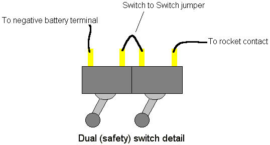
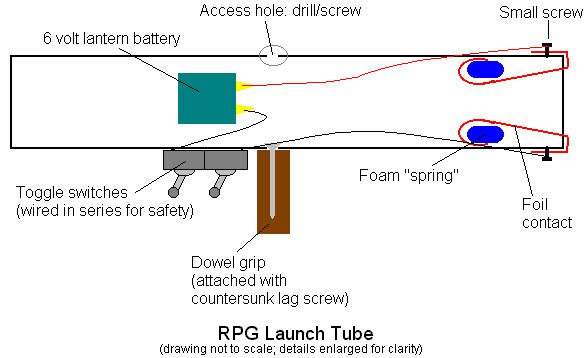

RPG Part IV
by
Tom Spooner
|
We're finally going to wrap up this project. All that's left is the launch tube for the rocket. Materials: Since I started this series, I acquired some nice heavy duty cardboard tubes that slide nicely into 4 inch PVC pipe. So I'll be using that. Depending on the diameter of your rocket, your mileage may vary. Start with your launcher grip. That's what the dowel is for. Drill a hole in the side of your pipe at the mid point; this is to give access to the pipe interior, so it should be large enough to put your wood screw and a screwdriver through. Now drill a hole opposite your access point, ust large enough for the screw shaft. And you want to bevel that hole so that your screw head will fit flush inside the pipe. You don't want it sticking up to snag your rocket. Drill a pilot hole in one end of the wood dowel, then attach it to the pipe. Let's go ahead and get our switches ready. We''ll use two switches for safety, and they'll be wired in series, which means no current flows until both switches are turned on.  You'll have a short jumper wire connecting the two switches. The other two wires will lead off to one terminal of your battery and one rocket igniter contact respectively. Mounting the switches may be tricky. No telling what you have in your junk box, so you'll have to improvise something. Be creative. My switches are the sort meant to flush-mount from the rear of a panel. So I built a small "panel" from a strip of sheet metal. It's just wide enough to drill the holes for the switches, and long enough to give me a mounting tab at either end so I can screw it down to the pipe. Note that the screws for this must be short, or they'll protrude into the pipe and snag the rocket. Bad idea. The remaining semi-complicated parts are the electrical contacts for getting juice to the rocket igniter.  The idea is to have flexible, sprigy contacts that will ... uh, contact the matching contacts on the rocket when you slide it into the pipe. With small screws attach your metal strips at the rear end of the pipe, then bend them into the pipe. Don't fold them flat in there; they should be bowed to stick up to touch the rocket contacts. If your strips tend to flatten out and lose contact, put small pieces of closed cell foam under them for springiness. Connect a wire to each strip contact by hooking a loop of wire (with a the end stripped, of course) under screw before tightening. Again, the screws shouldn't extend into the pipe's interior. One wire should go to one switch, as previously mentioned. The other wire should go to your battery; the terminal opposite the one wired to the switch. Neatness counts, so tape those wires down to the side of the pipe. You don't want them to snag on anything. Likewise tape the battery to the pipe. Where isn't critical so long as it doesn't block your vision. That's it. To use, verify that both of your launch switches are in the off position. Load you rocket into the tube by sliding it in from the rear. Verify that the electrical contacts make. Make sure there's nothing behind you that can't survive a little scorching. Aim (and bear in mind that projectile drop will be significant; aim high). Turn one switch on. Verify your target again. Fire by turning the remaining switch on. I highly recommend that you grenadiers wear goggles when you use this sucker.
|